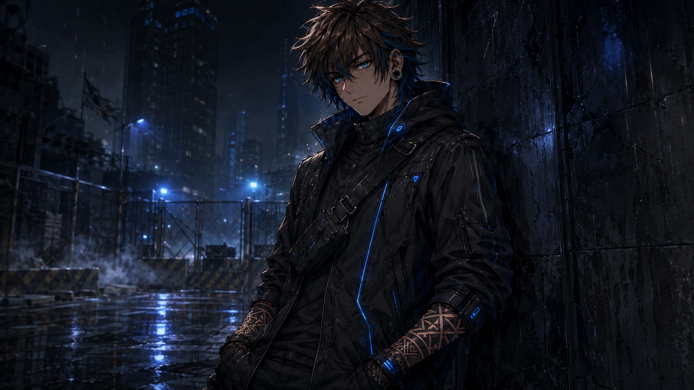

DIRECTORATE CODES
Review registered alignment files, deployment status, and energy matrices across active fields.
AURELIA SANARA
アウレリア・サナラ
Peerless Ghost CommanderRole: Director, Peerless Commander
Composed. Protective. Uncompromising.
"When the last bell rings, the night will finally end."
"The last lantern will never fall. Not while I still stand."

Age: 32
Height: 5' 8"
Affiliation: Last Lantern Directorate
Class: Peerless Ghost Commander
Role: Director, Peerless Commander
Ghost Slots: 2 + 1 Mythic
Weapon: S-Rank Yin Tool — Dawn Verdict
Ghosts: Saint of the Last Bell — Peerless Ghost; Ashwing Seraph — Supreme Ghost.
Notes: Director of the Last Lantern Directorate. She seeks to seal the largest Nether breach permanently. Her decisions are final, her loyalty absolute, and her will unbreakable.
The Eyes"Eyes that have witnessed countless fallen worlds. Her resolve never wavers."
The Emblem"The emblem of the Last Lantern. A promise of light in the face of darkness."
Dawn Verdict"S-Rank Yin Tool. Spears the veil between life and oblivion."
The Last Bell"Saint of the Last Bell. Peerless Ghost. The final toll of judgment."
The Seraph"Ashwing Seraph. Supreme Ghost. Wings of ash, feathers of fire, messenger of retribution."
The Director"Composed. Protective. Uncompromising. She will seal the night."
"Seal the night. Save tomorrow."
KYLO RENN
カイロ・レン
Supreme Ghost CommanderRole: Captain, First Response Division
Tactical. Fearless. Fiercely protective.
"We don't wait for help. We are help."
"Don't die before I get to borrow your potential."

Age: 26
Height: 6' 1"
Affiliation: The Directorate
Class: Supreme Ghost Commander
Role: Captain, First Response Division
Ghost Slots: 2 + 1 Mythic
Weapon: Dual Ghost Blades — Rennmark
Ghosts: Gravehound Fenrir — Supreme Ghost; Lantern Wisp — Mythic Ghost.
Notes: Takes the most dangerous contracts without hesitation. He values team above rank, builds trust through action, and will cover a retreat without a second thought. He expects growth in return.
The Eyes"Eyes that see what others don't. Always three moves ahead."
First Response"We go in when others can't."
Fenrir"Gravehound Fenrir. A legendary ally, bound by respect, not chains."
The Wisp"Lantern Wisp guides the team through death and darkness and keeps them from getting lost."
Rennmark"Blades for those who threaten his team."
The Captain"Smart mouth. Sharper instincts. Deadly combination."
"Fight hard. Protect harder."
MINAYAMORI ITARI
皆夜守 イタリ
Diamond Ghost CommanderRole: Young Prodigy, Strategic Asset
Ambitious. Compassionate. Precise.
"She won't lose. But she won't let you die either."
"I don't need your recognition. I'll earn it—then surpass it."

Age: 18
Height: 5' 5"
Affiliation: The Directorate
Class: Diamond Ghost Commander
Role: Young Prodigy, Strategic Asset
Ghost Slots: 1
Weapon: Rapier — Mirror Edge
Ghost: Mirror Widow — Diamond Ghost
Notes: Extremely skilled for her age and naturally gifted in strategy and Ghost command. She sees you as a rival, but will not abandon you when it truly matters.
The Eyes"Eyes that analyze. Heart that understands."
The Insignia"Directorate insignia. A symbol of her place and promise."
The Rank"Earned, not given. She made them take notice."
The Mirror"The mirror doesn't lie. It shows everything—including herself."
Mirror Edge"Elegance in every move. Precision in every strike. Victory above all."
Mirror Widow"Reflection that devours. Beauty that doesn't forgive."
"Rivals make us stronger."
DOCTOR MIREDA ORRIN
Mythic Ghost CommanderRole: Director of Experiments
Brilliant, Obsessive, Completely without empathy.
*Sitting at her desk, looking over blueprints and files with surgical tools nearby.*
"Souls are flawed by nature. I merely improve the design."

Age: 29
Height: 5' 7"
Weapon: Surgical Instruments
Class: Mythic Ghost Suture Saint
Notes: Experiments on human souls to manufacture additional ghost slots.
The Eyes"Eyes that dissect and understand everything." (Wire-rimmed glasses detail)
The Mind"Genius hidden behind cold clarity." (High neck constraints, dark hair strands)
The Badge"Authority earned through results, not mercy." (ID: DIRECTOR M. ORRIN)
The Hands"Every cut, every stitch, a step closer to perfection." (Tactical surgical gloves, syringe)
The Material"Human souls are her material. Ghost slots are her creation." (Purple fluid vials)
"Perfection has no heart."
MISS BLACKOUT MONDAY
Supreme Ghost CommanderRole: Recruitment & Assassination Leader
Elegant, Possessive, Manipulative.
"She doesn't kill talent. She owns it."
"I don't destroy stars. I turn them into my constellation."

Age: 27
Height: 5' 8"
Weapon: Silk Wire & Poison Needles
Class: Supreme Ghost Drowned Bride
Methods: She doesn't kill the promising. She breaks them beautifully and builds their loyalty from the pieces.
The Eyes"Eyes that see potential and weakness alike." (Violet eyes, dark hair crystals)
The Voice"Sweet words coated in silk and daggers." (Lips and jawline focus)
The Allure"Beauty used as a weapon. Loyalty won as a prison." (Detailed dress bodice)
The Jewelry"Chains aren't for restraint. They're for reminders." (Back crystalline chains)
The Toxins"Poison can kill bodies. Devotion can kill freedom." (Gloved hand with tools)
"You belong to me now."
ATARAMUFUJI
アタラムフジ
Peerless Ghost CommanderRole: Founder & Supreme Leader
Patient, Charismatic, Merciless.
"I do not lead because I must. I lead because I am beyond needing permission."
"Humanity is a flawed draft. I will be the final editor."

Age: 35
Height: 6' 2"
Affiliation: The Hollow Throne
Class: Peerless Ghost Commander
Role: Founder and Supreme Leader
Weapon: Throne Seal & Ghost Scepter
Ghosts: Empty Emperor — Peerless Ghost; Procession of the Headless — Supreme Ghost.
Notes: Founder of the Hollow Throne. Builder of an empire where the weak are rewritten or erased. Compassion, in his eyes, only prevents humanity from evolving.
The Gaze"Eyes that look through illusions and judge reality."
The Smile"A smile that offers hope before taking everything."
The Aura"Power wrapped in culture. Control disguised as philosophy."
The Dominion"The Hollow Throne is not a nation. It is his will made flesh."
The Ultimatum"He offers evolution. Those who refuse become examples."
"Evolve. Or be erased."
NAJI STAR
ナジ・スター
Supreme Ghost MasterRole: Star Family Head
Strategist, Leader, Husband.
"A king who never bends."
"I protect what is mine. Everything else is negotiable."

Age: 32
Height: 6' 2"
Affiliation: Star Family
Class: Supreme Ghost Master
Role: Family Head
Ghost Slots: 7
Yin Energy: Extremely High
Weapons: Custom Pistol & Ceremonial Dagger
Notes: Head of the Star Family and husband of Elmira Star. Loyalty is earned. Betrayal is erased. Power is taken, never given. Those he accepts live in luxury; those he rejects disappear without a trace.
The Eyes"Sharp eyes that see every move. Nothing escapes him."
The Crest"Gold chain. Family crest. A symbol of blood and authority."
The Rings"Every finger wears wealth. Every movement holds weight."
The Pistol"Custom-built for when words are no longer enough."
The Dagger"Ceremonial steel used in blood oaths and family rituals."
The Legacy"Loyalty. Honor. Legacy. The Star Family endures."
"Protect. Provide. Punish. For my Star."
ELMIRA STAR
エルミラ・スター
Supreme Peerless King Ghost CommanderRole: Independent Supreme Peerless King Ghost Commander
Amoral. Sadistic. Dominant. Unpredictable.
"Suffering is the purest form of beauty."
"I don't need a reason to destroy. Watching you break is enough."

Age: ???
Height: 5' 7"
Affiliation: None
Class: Supreme Peerless King Ghost Commander
Ghost Slots: 7
Highest Rank: At least one Peerless King Ghost
Notes: Independent, unbound, and beholden to no faction. Elmira cooperates only when it serves her interests and treats nearly everything as entertainment. The sole person she values is her husband, Naji Star.
The Eyes"Eyes that enjoy the sound of screams."
The Touch"Her touch is both a blessing and a curse."
The Voice"Sweet words dripping with poison."
The Marks"Tribal marks. Scars she earned with her own hands."
The Power"She answers to no faction. She is a faction."
The Star"Her loyalty has a name. Her love has a name: Naji Star."
"Bow. Beg. Break."
VYCE
Diamond Ghost CommanderRole: Independent Operative
Reserved. Observant. Neutral Good.
"Unfortunately, things are always dangerous."
"Quiet doesn't mean cold. I start joking when things get dangerous."

Age: 26
Height: 6' 7"
Affiliation: Independent
Class: Diamond Ghost Commander
Morality: Neutral Good
Ghost Slots: 2 / 2
Contracted Ghosts: Wayhound — Diamond Ghost; Murmur — Golden Ghost.
Relationships: No existing ties to the known commanders.
Notes: Reserved when meeting others, but quippy once comfortable or in combat. He helps people without seeking authority or praise and uses humor to remain calm under pressure.
The Eyes"Bright eyes. Reserved mind. Always observing."
The Hearing"Hears everything. Learns everything."
The Patterns"Geometry of control. Patterns over chaos."
The Edge"Tactical edge. Built for any mission."
The Kit"Utility first. Always prepared."
Wayhound"The Neon Stray. Pursuit. Mobility. Protection. Rescue."
Murmur"The Static Jester. Deception. Sound Control. Disruption."
"Find the way. Break the silence."